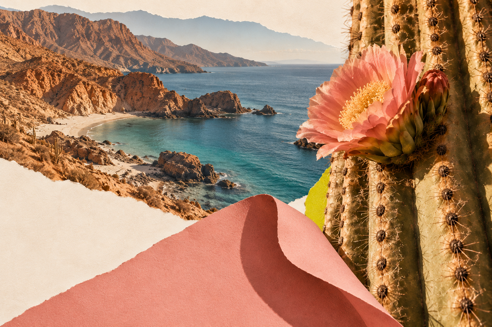

Selected direction · 23 October 2026
Mineral Bloom
Warm materials. Clear structure.
A small electric signature.
for Growth
Menos ruido,
más crecimiento

One family.
Distinct roles.
Limestone
#F3E8D7Foundation
Mineral ink
#23332FType and structure
Warm coral
#E89B86Expression
Sun citron
#D5D83EPunctuation
Signature blue
#0094E2Small signature details
Start with the foundation
Limestone and mineral ink lead business documents. Use coral for selected panels and citron for small moments of emphasis.
Give the imagery room
The collages already carry rock, cactus and sea colours. Keep surrounding layouts clear and choose one leading expressive colour.
Keep blue deliberate
Preserve the original logo. Use the signature-blue token in recurring details without making it the dominant background.
Human expression.
Everyday clarity.
Bricolage Grotesque / display 700
Menos ruido,
más crecimiento
Aa Bb Cc Ññ ÁÉÍÓÚ
Manrope / body 400 · labels 600
Your Digital Oasis for Growth
Use direct language, clear hierarchy and comfortable spacing. Preserve accents and supplied bilingual wording.
Diseño, tecnología, creatividad.
Aa Bb Cc Ññ ÁÉÍÓÚ · 0123456789
Contrast gives
the colour purpose.
Signature blue on limestone is 2.74:1. Use that pairing for nonessential decoration, not text, essential icons or focus indicators. These sRGB pair checks do not constitute a full accessibility audit.
04 / Reusable system
Ready to build from.
One token source, unchanged artwork, local fonts and a shared image library.